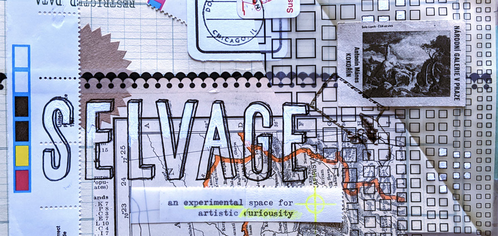
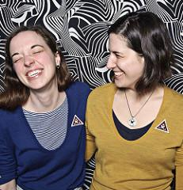

Archival site for Letter Writers Alliance
The Letter Writers Alliance was a member-based organization dedicated to keeping letter writing alive. The Alliance was started in the Summer of 2007 by Kathy Zadrozny and Donovan Beeson and retired in the Summer of 2020. You can read more about the how and why in our blog post, A Farewell Is In Our Future." We maintain this site as an archive so that our free downloads, recorded events, and blog posts can still be referenced and enjoyed. Keep writing letters!
Archive
Please enjoy the wealth of content that we created for over a decade. We are no longer updating any of these platforms.
Digital Platforms
- L.W.A. Blog (June 2007- Dec 2019)
- Recorded Online Events (Letter Socials and Book Club)
L.W.A. Book Club Newsletter
- Fall 2018, The First Volume (2 pages, 5.66 MB)
- Winter 2018, The Second Volume (2 pages, 1.2MB)
- Spring 2019, The Third Volume (2 pages, 837 KB)
- Winter 2019, The Final Volume (2 pages, 1.07 MB)
Presently: Where to find us

Downloads
{kind=link}
{kind=link}
10th Anniversary Stationery
8.5" x 11", 1 sheetDownload PDF
Folding Stationery
Folds to make its own envelope8.5" x 11", 1 sheet
Download PDF
Via Camel Rate Fauxstage
8.5" x 11", 1 sheetDownload PDF
Heart Award Stationery
8.5" x 11", 1 sheetDownload PDF
Year of the Rat Artistamp
8.5" x 11", 1 sheetDownload PDF
Year of the Rooster Artistamp
8.5" x 11", 1 sheetDownload PDF
Year of the Dog Artistamp
8.5" x 11", 1 sheetDownload PDF
Year of the Pig Artistamp
8.5" x 11", 1 sheetDownload PDF
Perpetual Calendar
Advanced paper sculpture; just look at the diagram and construct from that.8.5" x 11", 2 sheets
DIY Cipher
Encode your top secret letters and messages with a pair of handy cipher wheels8.5" x 11", 1 sheet
Download PDF
Ingress Stationery & Notecards
- Ingress Stationery (2 per sheet)
- IngressIngress Note Cards (4 per sheet)
- IngressIngress Resistance Note Cards (4 per sheet)
Pigeon Scarf Knitting Pattern
For plastic novelty pigeon use only. Do not put on real pigeons.8.5" x 11", 1 sheet
Download PDF
Lucky Letter Writing Stationery
8.5" x 11", 1 sheetDownload PDF
FAQs
How about Pen Pals?
If you have used our service in the past, we have kept the agreement available as an archive for your reference. We cannot contact lost pen pals for you or forge lost connections.
We no longer match pen pals nor do we have a list of our past pen pal matches. We have a long list of recommended pen pal swaps and other letter writing organizations on our blog post, Sincerely yours, The L.W.A." that you can use for your letter writing needs.
Do you still have ____?
We no longer have any stock. We sold or donated everything we had. This includes pigeons and pins.
Can I still submit I.R. projects?
You can, but we may no longer have your merit badge for your project. Submit it and we will do what we can.
What happened to that one download you use to have?
We retired many of our downloads when we became an inactive organization. The downloads you see above are all we have available. We do not have the files of any of the other old downloads.
Can I still login to my member account?
No. We no longer use the platform that held member accounts; this data is no longer active.
What about my privacy as a past member?
When we were matching pen pals we were very serious about your privacy. We did not and will not share it with anyone other than the pen pals you requested. We did not and will not sell your information or otherwise do anything evil with the information you gave us.
About
The Alliance was started in the Summer of 2007 by Kathy Zadrozny and Donovan Beeson. With a combination of both online presence and in person gatherings we gave folks the tools to maintain the art of letter writing. Donovan and Kathy designed, created, and packaged everything themselves.
When we started the Alliance our only goal was for people to write more letters. After over a decade, we can safely say that we have achieved that objective. Along the way, we have gained friends, learned about so many different lives, explored new ways to reach out through the postal system, and had a more rewarding experience that just making stationery or greeting cards could ever have given us.
Our Thoughts on Making Time for Letters
Every time you write an e-mail or make a phone call, ask this question, “Is what I have to say to this person worth more than five minutes of my time?” If the answer is yes, then put down that receiver and back away from the monitor. Just because something is quick or free, doesn’t mean it is the best or the most effective way to do it. If you are going to communicate, why not have it be meaningful?
Letters are the most intimate form of long-distance correspondence we have available. It is a tangible connection between the sender and receiver. One cannot hold an email and marvel at how they are touching the same object that someone else held thousands of miles away. Writing a letter gives one the opportunity to choose their words with care, rather than having to spit them out willy-nilly into the ethereal land of zeroes and ones. A letter is proof of history, an artifact of one’s life and community.
Select Press
- Time Out Interview , 2011
- Book Riot Interview , 2012
- Friendship Blog interview , 2012
- Write_On Interview , 2016
- Jet Pens Interview , 2016
© Letter Writers Alliance 2007-2020